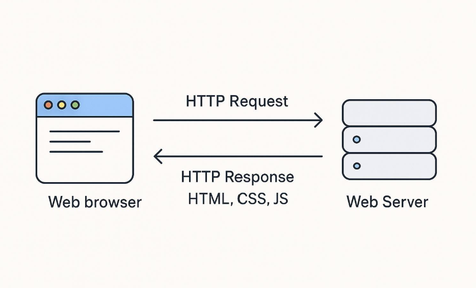

Introduction
The Hypertext Transfer Protocol (HTTP) is one of the main technologies that allows web browsers and web servers to communicate. When someone visits a website, HTTP helps the browser request information and receive the content needed to display the page.
HTTP has changed quite a bit since the early days of the World Wide Web. Newer versions have introduced improvements in speed, connections, and how information is transferred. This website looks at how HTTP developed and why those changes matter to people who use the web today.

Topics in This Website
1. History of HTTP
Learn about the early versions of HTTP and the major changes that happened as the web grew.
Read about HTTP history2. HTTP/2 and HTTP/3
Explore how newer versions improved performance and changed the way web traffic is handled.
Explore newer versions3. Key Concepts
Review important HTTP terms, including requests, responses, methods, and status codes.
Review key concepts4. References and Resources
Find the sources used to research HTTP and links for learning more about the subject.
View referencesKey Terms
- HTTP: A protocol used for communication between web clients and servers.
- Client: A program, such as a web browser, that requests information.
- Server: A computer or program that responds to requests.
- Request: A message sent by a client asking for a resource or action.
- Response: A message returned by a server with a result and related information.
- HTTPS: HTTP communication protected using TLS encryption.
HTTP at a Glance
The table below summarizes some important milestones in the development of HTTP. More detail is provided on the history page.
| Version | General significance |
|---|---|
| HTTP/0.9 | The early protocol supported simple requests for web documents. |
| HTTP/1.1 | Added important features that helped support more complex websites. |
| HTTP/2 | Introduced changes designed to improve performance and transfer efficiency. |
| HTTP/3 | Uses QUIC as its transport, helping improve connection performance and reliability. |